Dropbox
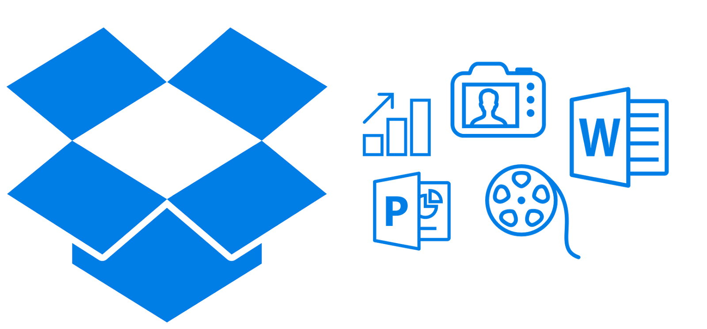
Dropbox es un programa que une todos los ordenadores que se
quiera a través de una única carpeta, permitiendo hacer copias
de seguridad y sincronizar archivos entre ordenadores. Dentro de
esa carpeta podemos crear tantas subcarpetas e incluir tantos
archivos como queramos, en principio hasta una capacidad de 2 GB,
que nos ofrecen gratuitamente, aunque pagando podemos aumentarla
hasta a 100GB.
Aunque no contemos en un momento determinado con nuestro ordenador
(por ejemplo, si estamos de viaje o en el colegio) podremos acceder
a nuestros archivos en esa carpeta (y subcarpetas) a través de
Internet visitando el sitio web de Dropbox, pudiendo además compartir
aquellas carpetas que queramos con otras personas (por ejemplo, con
nuestros alumnos). Puede utilizarse también con dispositivos móviles.
Instalación
Accedemos a la página web de Dropbox
En la página que se nos ofrece, pulsamos en Download Dropbox
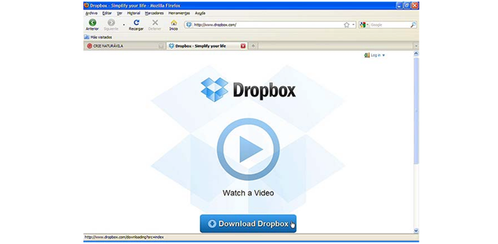
A continuación elegimos Guardar archivo y esperamos a que descargue...
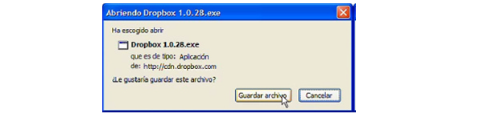
Abrimos el archivo y pulsamos en Aceptar y en Ejecutar
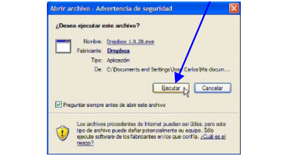
La secuencia de instalación la primera vez que se realiza es esta...
Se pulsa en Install
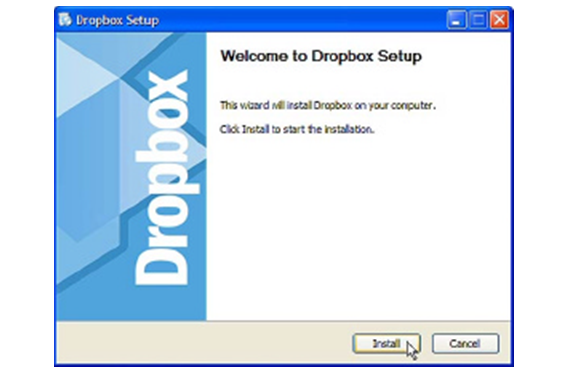
Tras indicar que no tenemos todavía ninguna cuenta Dropbox, hacemos clic en Next
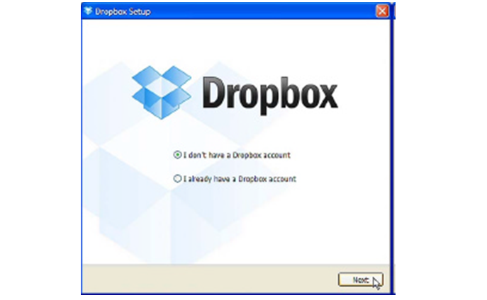
En la siguiente pantalla, rellenamos nuestros datos. En 'Password' escribimos la contraseña que
queramos (no tiene por qué ser la misma que la del correo electrónico que hemos escrito) y en
Verify password la repetimos...
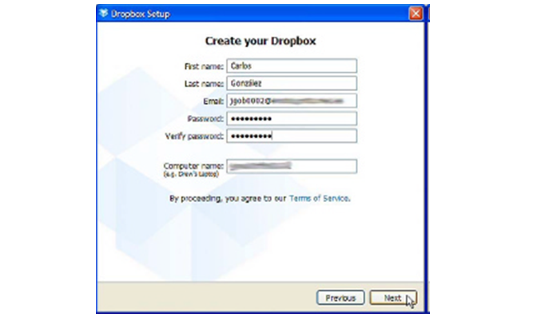
Seleccionamos el tamaño de Dropbox que queramos (por defecto, el de 2 GB, que es gratuito)
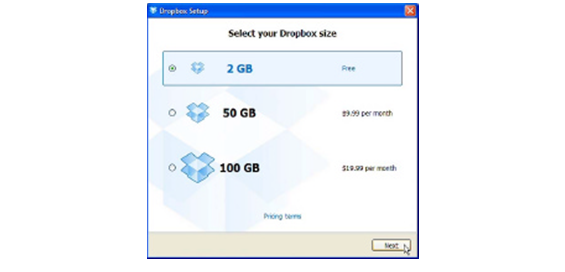
Dejamos la instalación que nos ofrece por defecto ('Typical') y presionamos en Install
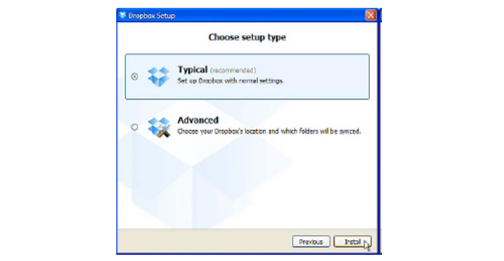
Durante dicha instalación a medida que pulsemos en Next se nos mostrarán una serie de
pantallas informativas sobre Dropbox, como la grande que se ve aquí debajo en la que se nos
indica dónde aparecerá un acceso directo a Dropbox
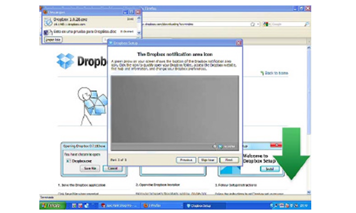
Cuando aparezca esta última pantalla, pulsamos en el botón Finish (finalizar)
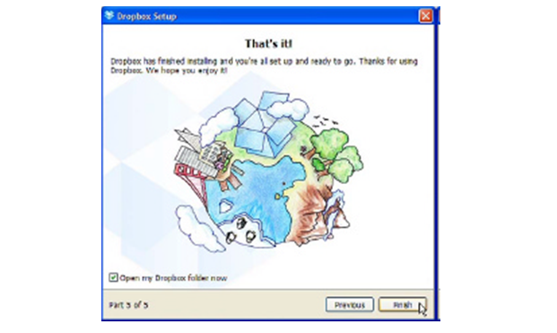
Se nos mostrarán las carpetas y archivos creados en nuestro ordenador: Photos, Public
y Getting Started.pdf (guía para comenzar)
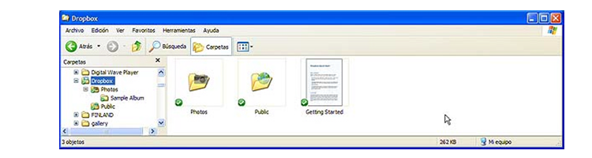
Esas carpetas y archivos se han creado exactamente igual en nuestro espacio en "la nube" (Internet),
y todo lo que creemos o añadamos en nuestro ordenador se copiará -dependiendo del tamaño- casi
instantáneamente en Internet, y viceversa, o también en otros equipos si lo hemos instalado en
más ordenadores. Si hemos modificado algo en Internet y nuestro ordenador está apagado, cuando
se encienda se sincronizará.